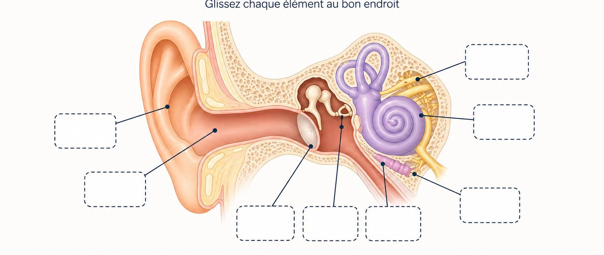

Quiz interactif sur la prévention du bruit, douze questions avec QCM, curseur, glisser-déposer et données entreprise LACAUX.
Le risque bruit en cartonnerie
12 questions · Code du travail · INRS · données LACAUX Frères
Le son est caractérisé par deux paramètres physiques. Lesquels ?
Au-delà de quel seuil d'exposition quotidienne (Lex,8h) la santé auditive est-elle considérée en danger en milieu de travail ?
Si l'intensité sonore (énergie acoustique) double dans un atelier, le niveau sonore mesuré en dB augmente de :
Une exposition d'1 heure à 89 dB(A) est aussi dangereuse pour l'audition qu'une exposition de 8 heures à :
À votre avis, quel est le niveau sonore moyen mesuré au poste opérateur dans un atelier de cartonnerie en pleine production (onduleuse, MAP, presses) ? Placez le curseur.
Glissez chaque structure anatomique sur la zone correspondante du schéma de l'oreille.
Sur mobile : touchez une étiquette puis la zone du schéma. Sur ordinateur : faites glisser ou cliquez.

Glissez chaque source sonore sur le niveau de bruit (dB) qui lui correspond.
Sur mobile : touchez une étiquette puis la zone cible. Sur ordinateur : faites glisser ou cliquez.
Dans l'entreprise LACAUX Frères, à l'atelier palettes, quel est le niveau sonore mesuré lors du montage des palettes ?
À l'onduleuse, quel est le niveau sonore d'exposition au niveau du décortiqueur SF1 ?
À la MAP (Machine À Plier), quel est le niveau sonore d'exposition à la bobineuse ?
Si un bouchon antibruit n'est pas porté pendant 10 minutes sur une journée de travail exposé, il perd :
La surdité due au bruit professionnel est irréversible.
- 80 dB(A) · seuil d'action — PICB à disposition, information, audiométrie proposée (art. R.4434-7).
- 85 dB(A) · seuil d'alerte — port des PICB obligatoire et signalisation des zones (art. R.4434-7).
- 87 dB(A) · valeur limite d'exposition (VLE) — à ne jamais dépasser, PICB inclus.
- +3 dB = doublement de l'énergie acoustique (échelle logarithmique).
- Hiérarchie : suppression à la source → réduction collective → PICB en dernier recours (art. R.4434-1).
- Surdité bruit : destruction définitive des cellules ciliées de la cochlée. Seule la prévention est efficace.